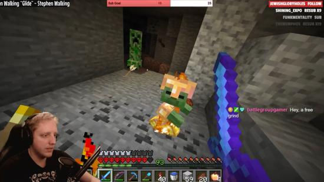

Lorsque vous mourez, c'est tout - pas de tentatives, de réapparitions ou de rechargements. Streamer Philza détient le record du monde de la plus longue course dans Minecraft hardcore, mais cette course s'est terminée de manière ardente mais décevante la semaine dernière, cinq ans après son début. La mort de Philza est due à la malchance et à un peu de panique. Vous pouvez voir le clip en entier sur Twitch, mais en gros, il se fait prendre dans un combat de caverne, se fait précipiter par un bébé zombie, prend un coup d'une araignée errante et meurt. Philza portait des ailes d'Elytra - qui occupent la fente d'armure normalement protectrice - il avait donc moins de défense que la normale, et son épée enflammée continuait à enflammer d'autres ennemis, ce qui ne faisait qu'ajouter aux dégâts qu'il subissait. Après coup, les téléspectateurs ont suggéré de nombreuses façons dont Philza aurait pu survivre, comme le note Polygon. Il avait un article de pomme d'or qui aurait restauré sa santé. Il aurait pu déposer un seau d'eau pour bloquer l'approche des ennemis. Philza dit que la panique l'a empêché de prendre les bonnes décisions. Nous sommes tous passés par là, mais la plupart d'entre nous n'ont pas enregistré de records pluriannuels à la suite de nos mauvaises décisions de jeu.